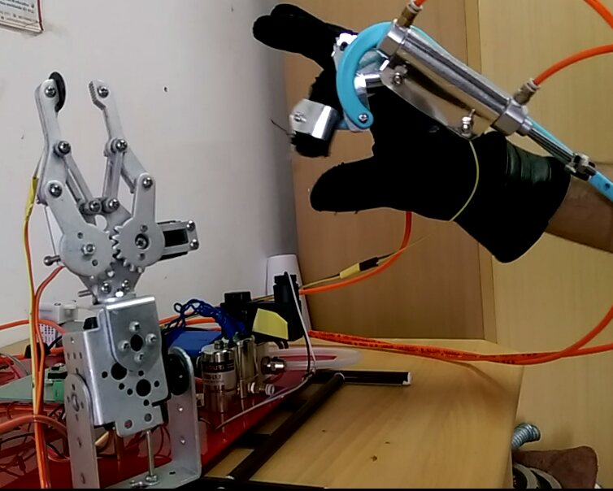
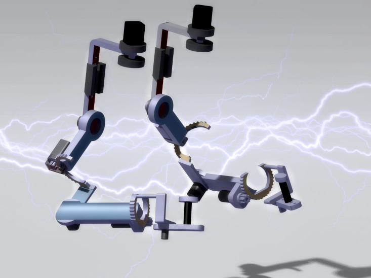

ENGINEERING PORTFOLIO / SELECTED WORK
Seeing the world.
Interacting with it.
I’m Waleed, a robotics developer with a master’s in Mechatronics Design. These projects explore how computer vision, robotics, haptics, and electronics connect the physical world with useful, intuitive feedback.
Explore the projects ↓Selected projects
01 — 09
01 / PERSONAL PROJECT
Driver Assist
System
From camera frames to visual alerts. A Raspberry Pi prototype combines object detection with custom traffic-light colour classification.
View project ↗
02 / ACADEMIC PROJECT
Orthographic
Teleoperation
Making a three-dimensional task easier to see. Motion tracking and a vision-based interface support placement tasks with a six-degree-of-freedom robot arm.
View project ↗
03 / ACADEMIC PROJECT
Haptic Feedback
Glove
Bringing a sense of touch to remote interaction. A wearable prototype explores force and tactile feedback through direct-control pneumatics.
View project ↗
04 / ACADEMIC PROJECT
Pneumatic Mechanism for VR
A multimodal teleoperation study exploring pneumatic feedback in a virtual environment.
View project ↗
05 / ACADEMIC PROJECT
STM32 Pattern-drawer Robot
An undergraduate pattern-drawing robot built around an STM32 microcontroller.
View project ↗
06 / PERSONAL PROJECT
DC-Cellbot Surveillance Bot
A solar-powered, camera-equipped two-wheeled robot with keypad-based remote control.
View project ↗
07 / PERSONAL PROJECT
Light Follower Three Wheeler
A three-wheeled robot that follows light using a sensor-driven electronic circuit.
View project ↗
08 / CONCEPT PROJECT
Exoskeleton Rehabilitation Robot
A dexterous exoskeleton concept exploring robot-assisted upper-limb rehabilitation.
View project ↗
09 / PERSONAL PROJECT
CCNA Frame-relay Network
A personal networking project modelling a Frame Relay network in Cisco Packet Tracer.
View project ↗